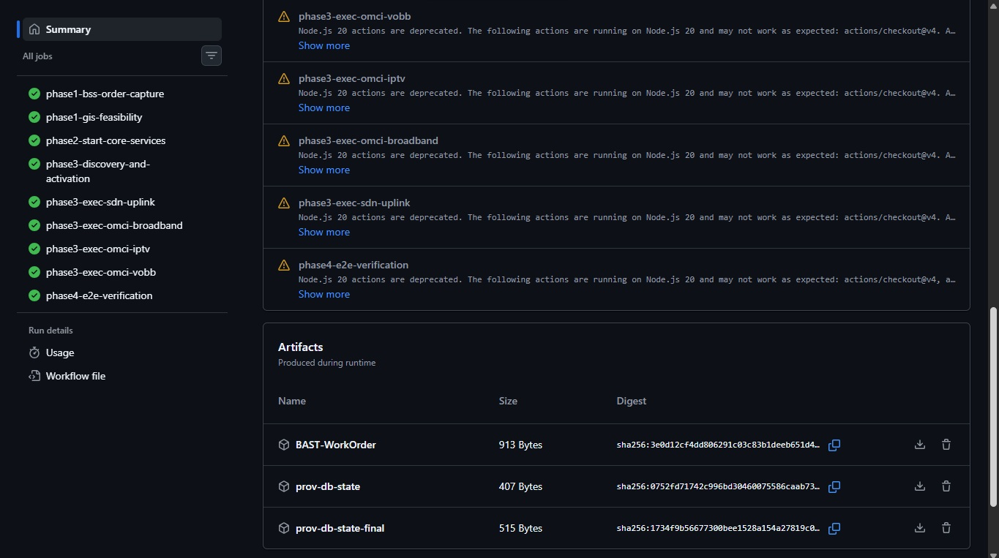

Bogor Regency, West Java, Indonesia · Solutions Cloud Architect
Lukmanul Hakim
Solutions Cloud Architect
Solutions Cloud Architect with 9+ years of hands-on experience across telecom networks, Linux/database high availability, DevOps automation, and cloud infrastructure (within a 15-year career span since 2011, including completing a Bachelor of Economics in Operational Management from 2016 to 2018). Experienced in Kubernetes (GKE, Amazon EKS, Alibaba Cloud), Terraform, Ansible, CI/CD security pipelines, and PostgreSQL HA across regulated finance, logistics, ERP, and telecom environments.
Focuses on practical, low-risk infrastructure design using a technology-agnostic and vendor-agnostic operational risk methodology (ISO 31000, FMEA/IEC 60812, FTA/IEC 61025) first validated in 2018 FTTH research and applied across telecom, on-premise HA, and multi-cloud environments, with clear rollback planning and cost-aware operations. Currently provides independent cloud architecture reviews, ad-hoc technical due diligence consultations, and enterprise DevOps technical enablement.
Because enterprise engagements are governed by NDAs prohibiting the publication of client source code, internal IPs, or live production screenshots, the architectures below are documented as anonymized reconstructions focusing on design decisions, practical trade-offs, and risk controls with zero client IP.
Applied Methodology · 2018 - Present
Technology- and Vendor-Agnostic Risk Framework
Rooted in 2018 Undergraduate Thesis research at Universitas Mercu Buana (FTA/IEC 61025 and FMEA/IEC 60812 applied to FTTH Triple-Play fulfillment testing, Repo ID: 44912 ↗), adapted into a repeatable, vendor-neutral approach for Single Point of Failure (SPOF) analysis, cloud migration readiness, cutover verification, and technical due diligence across telecom, on-premise HA, and multi-cloud platforms.
Context & Scope: Standardized delivery pipelines in an OJK-regulated FinTech environment (POJK 10/2022, POJK 4/2021, Bank Indonesia guidelines) within the local engineering perimeter, separate from HQ-managed core lending systems.
Architecture & Controls: Implemented GitLab CI security gates (SAST, staging DAST, Secret Detection, Merge Request approvals), Snyk vulnerability scans, Harbor private registry controls, pull-based Flux CD GitOps with git-revert rollback, least-privilege RBAC, DR checklists, and ELK/OpenSearch logging.
Trade-Off & Result: Chose pull-based Flux CD over push-based CI scripts so cluster credentials stay inside the cluster perimeter and Git serves as a single auditable change record.
PT Tri Adi Bersama (Anteraja): Multi-Cluster GKE & Amazon EKS DevSecOps
Nov 2021 - Jul 2022 · Developers & 13-person DevOps team · ~120 Microservices
Context & Scope: Operated ~120 logistics microservices (~122 API endpoints) across GKE (pre-production validation) and Amazon EKS (production) with fast release velocity requirements.
Architecture & Controls: Embedded SonarQube (SAST) and OWASP ZAP (DAST) gates into Azure DevOps CI/CD alongside Nexus Repository Manager and Rancher, tuned Kubernetes HPA and compute requests, and unified monitoring across ELK, Prometheus/Grafana, and Slack/MS Teams/Pushover alerts.
Trade-Off & Result: Kept pre-production validation on GKE isolated from peak production on EKS so security scans and load validation never competed with live parcel traffic. Cut pre-production critical vulnerabilities by 60% while sustaining sub-second API response times.
PT Hashmicro Solusi Indonesia: Odoo AWS EC2 Migration & Dual-Site PostgreSQL HA
May - Oct 2020 · 11-member cross-functional team · AWS EC2 & Bare-Metal Proxmox VE
Context & Scope: Migrated Odoo ERP workloads from on-premise VPS to AWS EC2 with faster repeatable onboarding, and built a dual-site PostgreSQL HA cluster for a custom Odoo F&B POS deployment.
Architecture & Controls: Automated EC2 provisioning via AWS CLI/Bash scripts, Marketplace snapshots, Ansible playbooks, WHM/cPanel, and scheduled S3 backups (50% faster setup). For POS, built dual-DC PostgreSQL HA on Proxmox VE with multi-ISP BGP failover, synchronous replication via repmgr (synchronous_commit=on, target RPO=0), repmgrd failover, HAProxy/Keepalived VIPs, and Barman PITR.
Related Reconstruction: Documented a reproducible multi-node PostgreSQL HA & Ansible architecture reconstruction (repmgr, Barman PITR, HAProxy, PgBouncer, Docker Swarm, Ansible automation, Prometheus/Grafana) using open-source tooling and synthetic data.
Tools: AWS EC2/S3, AWS CLI, Bash, Ansible, GitHub Enterprise, Proxmox VE, PostgreSQL HA (repmgr/Barman), HAProxy, Keepalived
PT KB Finansia Multi Finance: Hybrid Cloud, VPS HA & Containerized CI/CD
Context & Scope: Maintained hybrid cloud and domestic VPS high-availability infrastructure aligned with OJK domestic data residency rules prior to GCP Jakarta availability.
Architecture & Controls: Accelerated releases by 40% using containerized Jenkins CI/CD (Bitbucket, Docker, Android CI/CD) and deployed a containerized ELK Stack to centralize incident logs and cut troubleshooting time.
Trade-Off & Result: Used Google Cloud Storage strictly for non-PII build artifacts and archival logs to preserve local VPS headroom while keeping all customer financial data domestic.
Tools: Hybrid Cloud & VPS HA, Jenkins, Docker, Bitbucket, ELK Stack, Google Cloud Storage
Jun 2024 · Advisory Proposal Scope (Anonymized Client)
Context & Scope: Authored two technical blueprints on the Application stream for an anonymized national public-sector modernization proposal under NDA (advisory/conceptual scope, non-production).
Architecture & Controls: Separated application domains into API Gateway, an isolated Identity domain with its own database, and a Core Ledger domain with its own database aligned with OJK and Bank Indonesia compliance principles, alongside a conceptual permissioned ledger verification model keeping PII off-chain.
Trade-Off & Result: Domain database separation limits migration blast radius during phased adoption, while storing only cryptographic hashes on-chain protects citizen privacy compliance.
Tools: Domain Microservices Architecture, ISO 31000, OJK & BI Compliance Alignment, Permissioned Audit Concepts
Context & Scope: Automated workflow reconstruction using synthetic data simulating FTTH provisioning validation checks (ONT/ODP received optical power threshold >= -24 dBm, GIS inventory alignment, Triple-Play profile checks) and JSON audit output generation.
Historical Boundary: Built independently post-employment with zero employer IP. The 2013 - 2014 PT Telkom Akses role was strictly L1/L2 physical telecom operations (non-DevOps, non-cloud-native).
Synthetic parallel validation workflow run (1m 54s).

Sample JSON audit output generated by synthetic validation.
Reverse-chronological career history from independent cloud advisory back to 2011, documenting each role within its actual scope, team context, and handover boundary.
Sep 2025 - PresentRemote
Solutions Cloud Architect & Technical Due Diligence Advisor
Independent Cloud & Technical Advisory
Conduct on-demand, NDA-governed architecture reviews and technical due diligence consultations for investors and business leaders, including independent Subject Matter Expert calls matched through global expert networks (VisasQ / Coleman Research).
Review AWS, GCP, and Azure migration plans, FTTH/GPON telecom assets, and operational readiness against ISO 31000 and ISO/IEC 20000 practices.
Apply FMEA (IEC 60812) and FTA (IEC 61025) methods to identify single points of failure, evaluate migration risks, and advise on practical cost control and reliability trade-offs.
Supported enterprise clients under NDA in drafting multi-cloud architecture blueprints and ISO 31000-aligned IT risk governance for legacy system modernization.
Advised engineering managers on staged migration planning, container security baselines, DevSecOps policies, and cloud cost alignment (advisory scope; production delivery remained with client teams).
Managed a 3-person DevOps team (2 senior, 1 junior) during a 4-month interim engagement covering client cloud environments on AWS, GCP, and Alibaba Cloud.
Containerized legacy VM workloads for Kubernetes using Terraform IaC baselines, automated backup/DR scripts, and reusable GitLab CI templates with SonarQube, SAST, and DAST checks through handover.
Worked within a 6-member cross-functional team on Alibaba Cloud (Jakarta) to standardize GitLab CI security checks (SAST, staging DAST, Secret Detection, Merge Request approvals), Snyk scans, and Harbor private registry controls.
Set up pull-based Flux CD GitOps deployment with git-revert rollback, least-privilege RBAC, DR checklists, and ELK/OpenSearch logging aligned with OJK (POJK 10/2022 & 4/2021) and Bank Indonesia guidelines.
Collaborated with developers and a 13-person DevOps team to operate ~120 logistics microservices (~122 API endpoints) across GKE (pre-production) and Amazon EKS (production).
Added SonarQube (SAST) and OWASP ZAP (DAST) security gates into Azure DevOps CI/CD pipelines alongside Nexus Repository Manager and Rancher, cutting pre-production critical vulnerabilities by 60%.
Tuned Kubernetes HPA and compute requests to reduce resource overhead while maintaining sub-second API response times, supported by ELK, Prometheus/Grafana, and Slack/MS Teams/Pushover alerts.
Built GitHub Actions CI/CD pipelines for Laravel web applications (PHP, MySQL, JS) and configured reverse proxy routing, HTTP security headers, and TLS/SSL encryption through handover.
Tools: GitHub Actions, Laravel, Reverse Proxy, TLS/SSL, PHP, MySQL
May 2020 - Oct 2020Jakarta, Indonesia
Cloud Automation & Infrastructure Lead
PT Hashmicro Solusi Indonesia
Worked with an 11-member cross-functional team to migrate Odoo ERP workloads from on-premise VPS to AWS EC2, automating server provisioning with AWS CLI/Bash scripts, Marketplace snapshots, Ansible playbooks, WHM/cPanel, and scheduled S3 backups (50% faster setup).
Built a dual-site PostgreSQL High Availability setup for a custom Odoo F&B POS deployment across two data centers on Proxmox VE with multi-ISP BGP failover, using repmgr synchronous replication (synchronous_commit=on, target RPO=0), repmgrd failover, HAProxy/Keepalived VIPs, and Barman PITR.
Tools: AWS EC2/S3, AWS CLI, Bash, Ansible, GitHub Enterprise, Proxmox VE, PostgreSQL HA (repmgr/Barman), HAProxy, Keepalived
Jun 2019 - Sep 2019Jakarta, Indonesia
DevOps Infrastructure Consultant
PT KB Finansia Multi Finance
Maintained hybrid cloud and domestic VPS high-availability infrastructure aligned with OJK (POJK 35/2018) and PP 82/2012, speeding up releases by 40% via containerized Jenkins CI/CD (Bitbucket, Docker, Android CI/CD).
Deployed a containerized ELK Stack to centralize incident logs and reduce troubleshooting time, using Google Cloud Storage only for non-PII build artifacts and archival logs while keeping customer financial data domestic.
Tools: Hybrid Cloud & VPS HA, Jenkins, Docker, Bitbucket, ELK Stack, Google Cloud Storage
Study Period: Bachelor of Economics (S.E.), Operational Management - Universitas Mercu Buana (GPA 3.17 / 4.00)Mar 2016 - Oct 2018
Feb 2015 - Jun 2015Jakarta, Indonesia
Network Telemetry & Infrastructure Engineer
PT Dimension Data Indonesia
Monitored MPLS core backbone links for Tier-1 banking clients using SolarWinds telemetry, troubleshooting latency spikes and packet loss across interbank clearing links.
Tools: SolarWinds Telemetry, MPLS Core Networking
Apr 2013 - Oct 2014Jakarta, Indonesia
Project Officer of Construction Management (POCM) | Directorate of Operation
PT Telkom Akses (Telkom Indonesia Group)
Assigned under the Directorate of Operation to coordinate field QA audits, ONT/ODP received optical power checks (>= -24 dBm), and Triple-Play (HSI, VoBB/VoIP, IPTV) acceptance testing across OEM vendors and Telkom Group units (including direct field updates to Telkom VP leadership).
Executed GPON OLT/ONT commissioning (T-CONT DBA, GEM ports, 802.1Q/Q-in-Q VLAN, IGMP) and Wireshark checks on VoBB SIP (RFC 3261) and RTP jitter during PSTN-to-GPON subscriber migration.
Wrote RHEL 6 ETL reconciliation scripts (Oracle, PostgreSQL, SOAP XML) to align GE Smallworld PNI physical inventory with I-Sisca/TenOSS, contributing OMCI/TR-069 checks to IndiHome Pilot SOPs and cutting trial defects by 20%.
EDP Specialist | Customer Care Specialist (L1/L2 Network Support)
Early Career: Circus Waterpark Kuta (Jan - Mar 2013) & Biznet Networks (Oct 2011 - Oct 2012)
Configured MikroTik firewalls, Windows Server, CCTV telemetry, and basic Bash/PowerShell sync scripts for POS and ticketing systems at Circus Waterpark Kuta.
Handled frontline L1/L2 broadband and enterprise troubleshooting (ADSL/HFC), CRM ticket logging, and SLA escalation handoffs to engineering RCA teams at Biznet Networks.
Tools: MikroTik, Windows Server, Bash/PowerShell, ADSL/HFC L1/L2 Support, Enterprise CRM
03 / Technical Instruction & Corporate Enablement
Corporate Training & Engineering Enablement
Hands-on technical instruction, curriculum design, and lab mentorship delivered for Tier-1 banking cohorts, corporate certification providers, and DevOps bootcamps.
PT Telkom Prima Cipta Certifia - Lead Freelance DevOps Instructor
Oct 2024
Architected and delivered enterprise-grade DevOps training curricula and intensive hands-on implementation workshops for corporate certification and consulting cohorts, mentoring engineers on production-ready CI/CD automation, containerization, and operational excellence.
Bank Rakyat Indonesia (BRI) - Technical Instructor, BSDP Scaling & Automation Intermediate
Jun 2024
Led intermediate-level enterprise enablement under the BRI System Development Program (BSDP), instructing Tier-1 banking engineering cohorts on infrastructure scaling strategies, operational automation workflows, and resilient delivery practices.
Sekolah DevOps Cilsy - Senior DevOps Instructor
Jul - Aug 2020 · Dec 2022 - Jan 2023 · Oct 2024
Designed end-to-end DevOps instructional modules across multiple cohort cycles, directing practical lab simulations, troubleshooting drills, and individualized technical mentorship to accelerate participants from foundational administration to production-ready DevOps proficiency.
04 / Certifications, Training & Education
Verified Credentials & Academic Background
Certifications (Proctored Exams)
Proctored Exam · Associate
Microsoft Certified: Azure AI Apps and Agents Developer Associate (AI-103)
Bachelor of Economics (S.E.) - Operational Management
Mar 2016 - Oct 2018
Universitas Mercu Buana, Jakarta · GPA: 3.17 / 4.00
Undergraduate Thesis (Repo ID: 44912):Operational Risk Analysis Using Fault Tree Analysis (FTA) and Failure Mode and Effect Analysis (FMEA) in the Process Testing of the FTTH Triple Play (IndiHome) Fulfillment System.